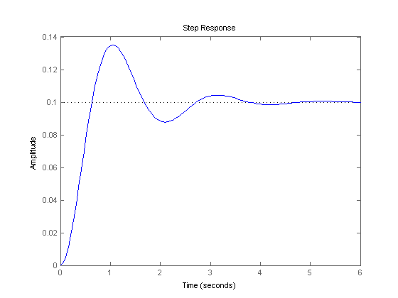
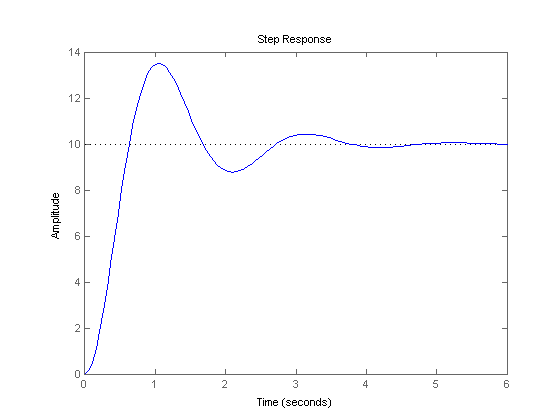
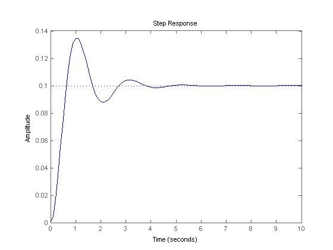
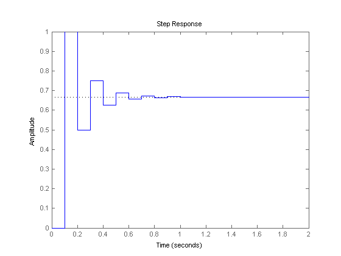

Extras: Generating a Step Response in MATLAB
The step function is one of most useful functions in MATLAB for control design. Given a system representation, the response to a step input can be immediately plotted, without need to actually solve for the time response analytically. A step input can be described as a change in the input from zero to a finite value at time t = 0. By default, the step command performs a unit step (i.e. the input goes from zero to one at time t = 0). The basic syntax for calling the step function is the following, where sys is a defined LTI object.
step(sys)
Contents
This command will produce a series of step response plots, all on the same figure. A plot will be made for each input and output combination. Most systems you will come across in the beginning will be SISO or Single-Input, Single-Output. In this case, there will be only one plot generated. However, the step command can also accept MIMO, Multiple-Input, Multiple-Output, systems.
For example, suppose you want to model a mechanical system consisting of a mass, spring, and damper, with an applied force. You can derive the transfer function shown below. You wish to see what the system response to unit step input is (an applied force of 1N). To model this, enter the following code into a new m-file. Running this script in the MATLAB command window will generate a plot like the one shown below.
M = 1; % units of kg K = 10; % units of N/m B = 2; % units of N-s/m num = 1; den = [M B K]; sys = tf(num,den) step(sys);
sys =
1
--------------
s^2 + 2 s + 10
Continuous-time transfer function.
 This figure shows the output response, which is the position of the mass. You can see that in steady-state the mass has moved 0.1 meters (the spring force balances the applied force). The system is underdamped and has overshoot.
Further details regarding the use of the step command for more advanced situations are given below.
Changing the magnitude of the step
So far, we have only dealt with unit step inputs. Suppose the input to our system was not 1 Newton, but in fact 100 Newtons. The step command can accommodate this by multiplying the system by 100 (since we are only dealing with linear systems). For the example above, this is achieved with the following code, which generates the plot shown below.
step(100*sys);
The plot looks similar to the one above it except that it has been scaled vertically by a factor of 100.
Specifying the time scale
The step response for any LTI object can be plotted with a user-supplied time vector. This vector will specify the time interval over which the step response will be calculated. If the vector is spaced at small time intervals, the plot will look smoother. Specifcally, a specified time vector can be supplied via the second input to the function as shown below.
step(sys,t);
In the above two plots, only the first 6 seconds of the response are shown. Suppose that the first 10 seconds need to be displayed. A time vector can be created to compute the step response over this range. Adding the following commands to your m-file and running will generate the figure shown below.
t=0:0.1:10; step(sys,t);
As you can see, the plot goes for 10 seconds.
Saving the response
The final note about the step command is that all of the above variations can be used with a lefthand arguments. There are two ways to invoke the lefthand arguments, depending on whether or not the time vector was supplied to the step command.
[y,t] = step(sys);
or
[y,t] = step(sys,t);
If the system is in state-space form, then the time histories of the internal states can also be returned.
[y,t,x] = step(sys);
The y vector contains the output response. It has as many columns as outputs and as many rows as elements in the time vector, t. The x vector contains the state response. It has as many columns as states and as many rows as elements in the time vector, t. When used with lefthand arguments, no plot is drawn when the step function is called. You will usually want to put a semicolon after the step command when you invoke it with lefthand arguments; otherwise, MATLAB will print out the entire output, state, and time vectors to the command window. You can plot the output response using plot(t,y) and the state response using plot(t,x).
Step response of discrete-time systems
If the system under consideration is a discrete-time system, step will plot the output as piecewise constant. If the sampling time is unspecified, the output time scale will be in samples. If the sampling time is specified, the time scale will be in seconds. Consider the following example.
num = 1; den = [1 0.5]; Ts = 0.1; sys = tf(num,den,Ts) step(sys)
sys =
1
-------
z + 0.5
Sample time: 0.1 seconds
Discrete-time transfer function.
